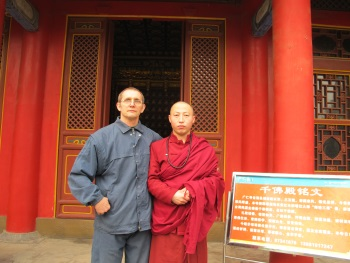

|  |
ОСНОВАТЕЛЬ ЦЕНТРА
Основатель Харьковского культурного центра Искусства Китая – Галица Александр Николаевич, 11 лет жил и работал в Китайской Народной Республике, много путешествовал по горным районам, где в даосских и буддийских храмах изучал древние методы китайской медицины оздоровления человека и боевые системы самозащиты. В 1989 году вернувшись в Украину организовал Харьковский культурный центр «Искусства Китая». На сегодняшний день наш центр принял участие в нескольких международных проектах, посвященных оздоровлению человека. Его деятельность освещалась телеканалами в программах посвященных здоровому образу жизни в которых подчеркивалась эффективность и простота в освоении этих древних технологий оздоровления.
Дополнительная информация центра
Вышли книги: Кулак Эмэй пай, Путешествие в цигун, Тайцзицюань – предел сознаваемого.
Информация по тел.: 066-104-33-35, 701-44-02.
Звоните, приходите, смотрите, но САМИ принимайте решение.